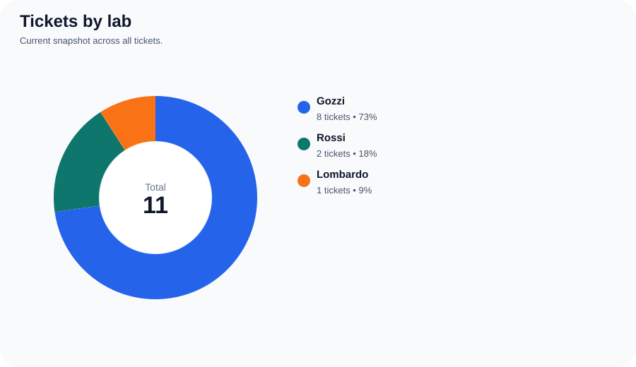
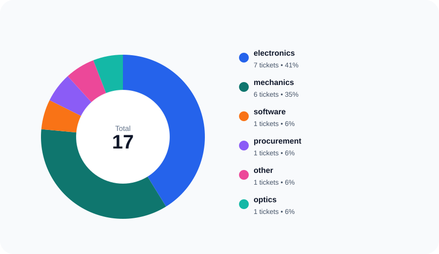
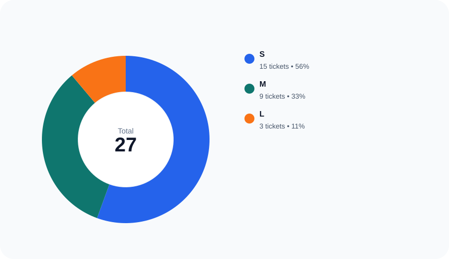
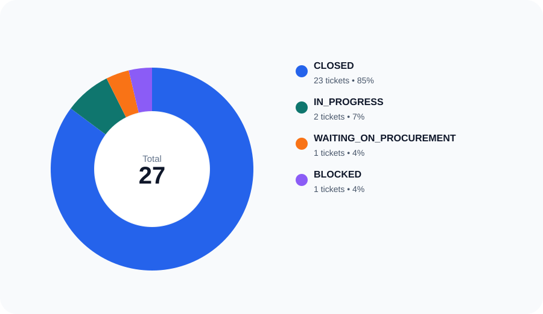
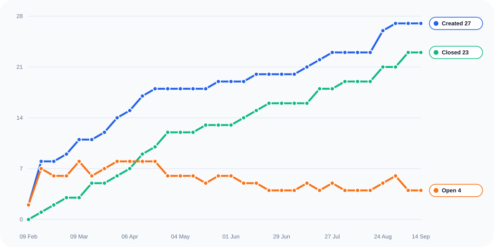
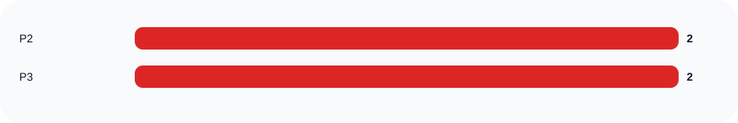
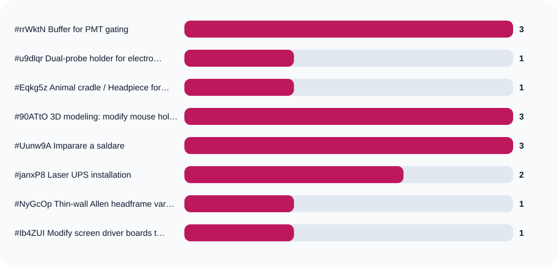
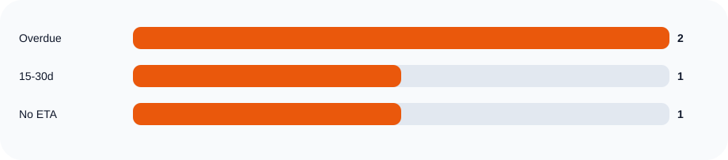
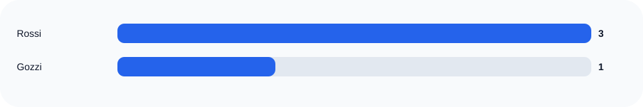

Live page snapshot
Lab Ticket Stats
This page gives a quick view of which labs are sending the most tickets, which categories are filling up, how large requests are, and where work is getting delayed or discussed the most.
Total tickets
20
Open tickets
5
Done / closed
15
Overdue open
3
Avg comments
0.6
Median closure days
12.1
Largest backlog
Rossi holds 3 open tickets out of 6 total.
Most overdue request
#u9dlqr6g in Gozzi is late by 59 days (Dual-probe holder for electrophysiology).
Oldest open ticket
#lFaxlDUY has been open for 128 days (New screen VR with reward and lickometer).
Comment hotspot
#u9dlqr6g collected 1 comments and is in status BLOCKED.








Overdue tickets to watch
- Dual-probe holder for electrophysiologyGozzi · P2 · overdue by 59 days
- New screen VR with reward and lickometerRossi · P2 · overdue by 20 days
- Brace for 2P mouse holderRossi · P1 · overdue by 13 days
Most commented tickets
- Dual-probe holder for electrophysiologyGozzi · BLOCKED · 1 comment
- 3D modeling: modify mouse holder in fusionGozzi · CLOSED · 3 comments
- Imparare a saldareGozzi · CLOSED · 3 comments
- Laser UPS installationRossi · CLOSED · 2 comments
- Animal cradle / Headpiece for WFI/MRIGozzi · CLOSED · 1 comment